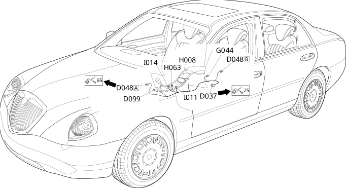

78 centre console bridge
- Path
- Electrical equipment > Wiring > 78 centre console bridge
- Kind
- wiring harness
- Applies to
- all engines; all production periods
- Interactive page
- https://sloeber94.github.io/elrnDB-lThss/en/#/207402
Applies to: all engines; all production periods

Topics that link to this page (9)
- D048A Console/centre bridge coupling(CENTRE CONSOLE BRIDGE)
- D048B Console/centre bridge coupling(CENTRE CONSOLE BRIDGE)
- D099 Radio phone preparation coupling(CENTRE CONSOLE BRIDGE)
- G037 Left glass holder light(CENTRE CONSOLE BRIDGE)
- G044 Light for vent in rear centre console(CENTRE CONSOLE BRIDGE)
- H008 Electric brake control(CENTRE CONSOLE BRIDGE)
- H063 Head restraint folding control switch(CENTRE CONSOLE BRIDGE)
- I011 Boot release switch(CENTRE CONSOLE BRIDGE)
- I014 Sun blind control switch(CENTRE CONSOLE BRIDGE)